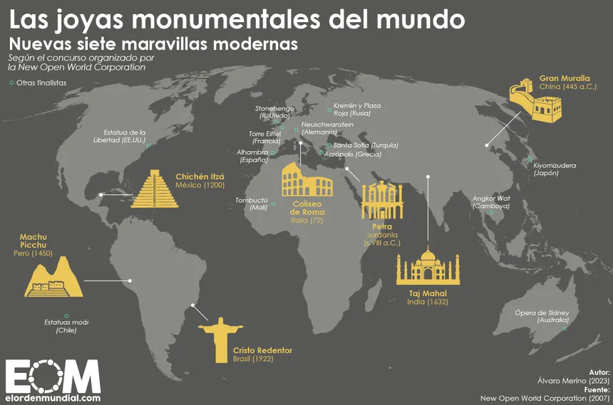

¿QUÉ SON LAS 7 MARAVILLAS DEL MUNDO?
Las 7 Maravillas del Mundo Moderno elegidas por un proceso de votación mundial en el año 2007, organizado por la fundación suiza New 7 Wonders es el mayor reconocimiento al impacto estético, cultural e histórico de las creaciones en la historia de la humanidad.
Todo aquel que tenga el privilegio de visitar por lo menos alguna, conecta con el legado que dejaron antiguas civilizaciones a través de espectaculares hazañas y singular arquitectura. Sin duda, cada una de ellas tiene su esencia, desde altas estatuas en colinas hasta colosales edificaciones, estos sitios no dejan indiferente a nadie.

Jerarquías Geográficas
Cronología de Reconocimiento UNESCO
La Cronología de Reconocimiento UNESCO es el registro ordenado y temporal de los años en los que diversos monumentos o sitios naturales han sido integrados oficialmente en la Lista del Patrimonio de la Humanidad.
Esta cronología no solo marca la fecha de protección legal de un sitio, sino que también refleja la evolución del interés global por conservar el legado histórico, arquitectónico y cultural de las civilizaciones antiguas. En el contexto de las maravillas del mundo, permite entender cómo cada una fue adquiriendo su estatus de "valor universal excepcional" ante la comunidad internacional.
Curiosidades de Construcción y Diseño
Glosario de Términos
Enlaces de Interés
- New7Wonders - Página oficial de la fundación que organizó la votación mundial.
- UNESCO Patrimonio Mundial - Listado oficial de monumentos protegidos por las Naciones Unidas.
- National Geographic - ¿Cuánto sabes sobre Machu Picchu?.
- El País - Viajes - Artículos y noticias actualizadas sobre el turismo en estos destinos.
- El Orden Mundial - Las siete maravillas del mundo moderno.
Ejercicios de Clase
- 1_0_Actividades_Funciones_Javascript
- 1_1_Ejercicios_JavaScript_5Mejorado
- 1_2_Ejercicios_JavaScript_5MejoradoLocalStorage
- 1_3_0_Ejercicios_JavaScript_If_ASIR_2al4
- 1_3_1_Ejercicio_JavaScript_ParqueAtracciones_ASIR
- 2_1_0_Ejercicios_JavaScript_Cuenta_Regresiva
- 2_1_0_Ejercicios_JavaScript_Cuenta_Regresiva1
- 2_1_0_Ejercicios_JavaScript_PiramideAsteriscos
- 2_1_0_Ejercicios_JavaScript_TablaMultiplicar
- 3 alertas ejercicio clase
- 4_0_Ejecricio_Imagenes_ocultar
- 4_1_Ejercicio_Imagenes_Cambiando
- 5_Ejercicio_Javascript_Reloj
- Añadir y eliminar frutas ejercicio clase